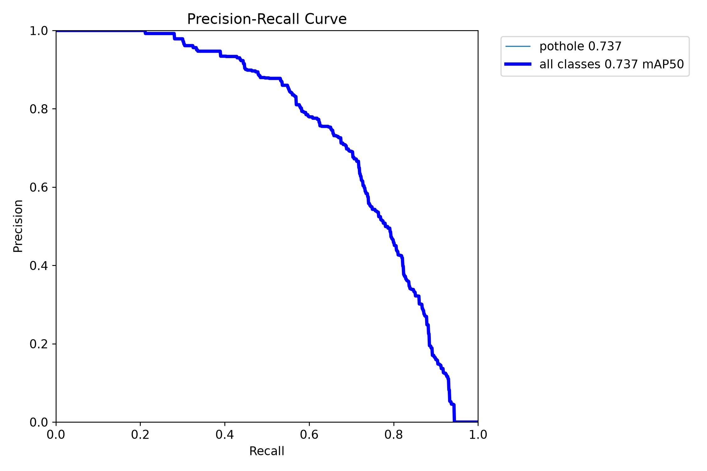
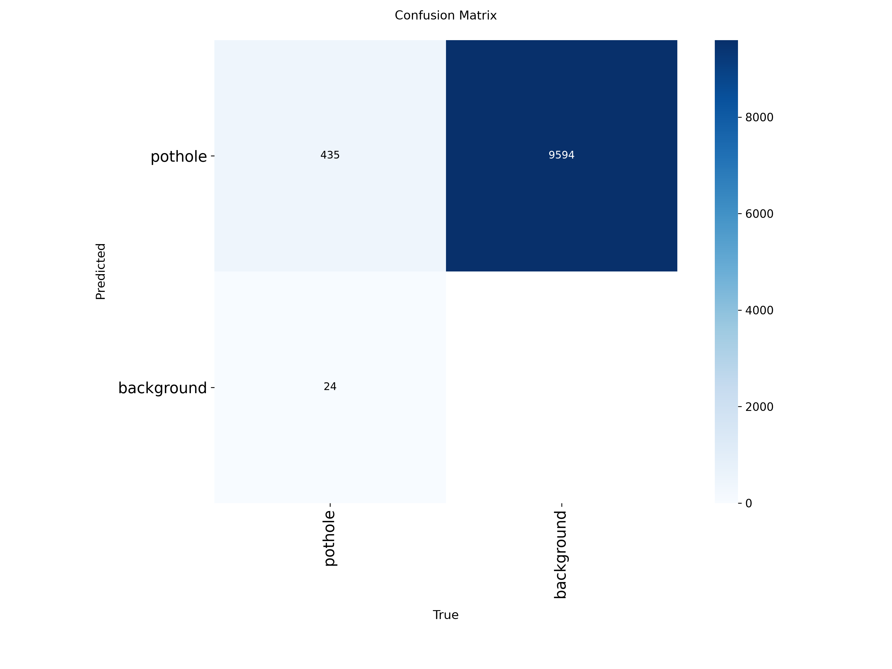
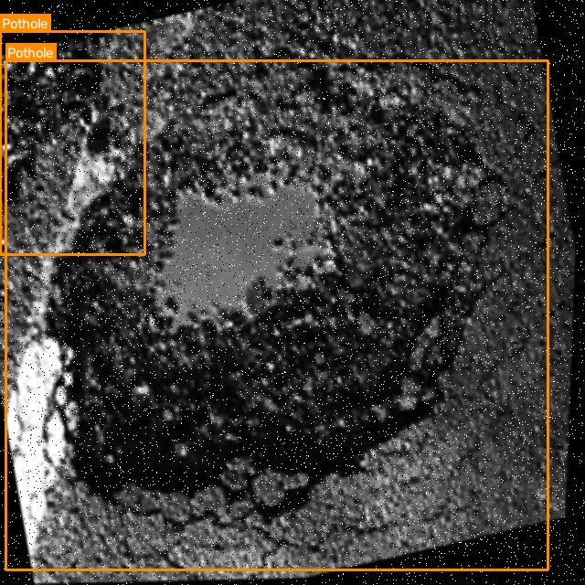
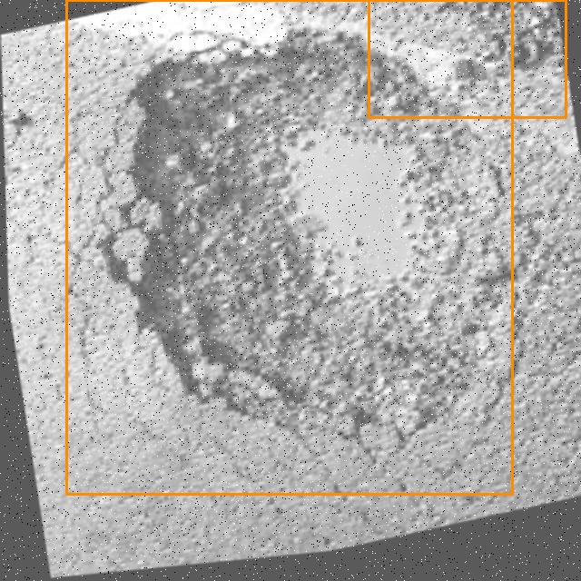
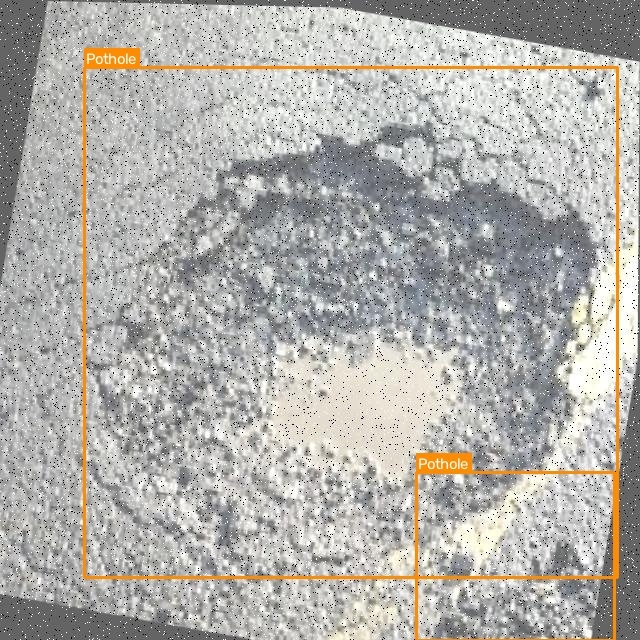
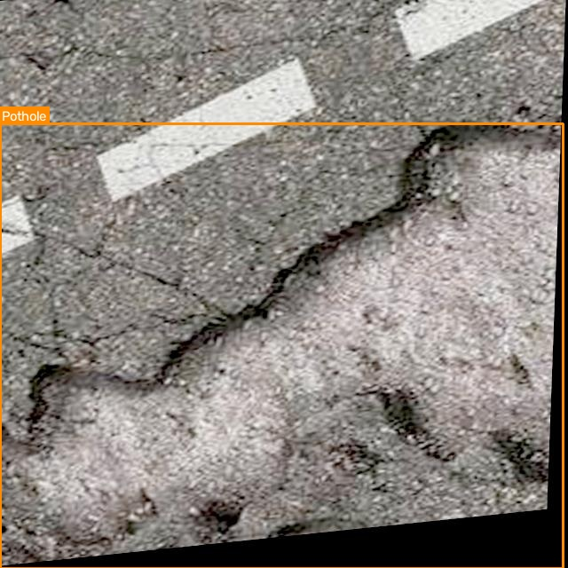

Smarter Roads.
Safer Journeys.
RoadGuardAI is an end-to-end artificial intelligence platform engineered to detect road potholes and asphalt degradation with millisecond latency using advanced YOLO object detection models.
How RoadGuardAI Works
1. Data Ingestion
Upload high-resolution road photography, dashcam video footage, or stream live frames from a vehicle-mounted camera.
2. Neural Inference
Trained YOLO neural network processes frames in parallel on dedicated NVIDIA CUDA GPUs, performing non-maximum suppression (NMS) and bounding box regression.
3. Audit & Reporting
Instant telemetry: pothole counts, confidence metrics, annotated visual overlays, and persistent audit logs in an SQLite database.
System Capabilities
Enterprise-grade road infrastructure monitoring tools engineered for reliability and precision.
YOLO Pothole Detection
State-of-the-art single-stage convolutional architecture trained on genuine road asphalt datasets for superior small and large pothole localization.
Multi-Format Image Analysis
High-throughput drag-and-drop analysis supporting JPG, PNG, WEBP, and BMP with configurable confidence thresholds and bounding box badges.
Automated Dashcam Video Pipeline
OpenCV-accelerated video decoding analyzing frames sequentially, producing downloadable annotated video files with frame-by-frame telemetry.
Real-Time Webcam Streaming
Ultra-low latency live frame capture and GPU inference at high FPS for moving vehicle demonstrations and live road surveys.
Academic Performance Metrics
Full mAP@50, mAP@50-95, Precision-Recall curves, and confusion matrix benchmarking computed strictly on an unseen 10% test split.
Persistent SQLite History
Automated logging of every inference run with timestamping, pothole counts, confidence scores, and preview links that persist across server restarts.
Images Scanned
Videos Analyzed
Potholes Detected
Avg Confidence
Detection Distribution
Recent Detections
View AllUpload Road Image
Drag & drop image here
or click to browse from device (JPG, PNG, WEBP)
Original Preview
Upload Dashcam Video
Drag & drop video clip
MP4, AVI, MOV (Road survey or dashcam)
Video Preview
Real-Time Camera Stream
Streams live frames directly to YOLO for instant bounding-box inference.
mAP@50 (Test Set)
Precision
Recall
F1-Score
mAP@50-95
Test Benchmark Metrics (Object Detection)
Training Environment
Academic Note: Classification Accuracy vs. Object Detection mAP
In image classification, accuracy simply checks whether a single category label matches. In Object Detection, a model must solve both localization (drawing tight coordinates around potholes with high Intersection-over-Union) and classification. Therefore, mAP (Mean Average Precision) and Precision-Recall curves are the standard academic benchmarks, strictly evaluating precision across IoU thresholds without artificial fabrication.
Precision-Recall (PR) Curve

Confusion Matrix

Total Road Images
Total Annotations
Base Scene Groups
Data Leakage
Split Ratio (70 / 20 / 10)
Split Breakdown & Leakage Prevention
Verified Ground-Truth Bounding Box Annotations




Detection Audit Log
| File Name | Type | Potholes | Avg Confidence | Date & Time | Actions |
|---|---|---|---|---|---|
| Loading history records... | |||||
About RoadGuardAI
RoadGuardAI: Intelligent Road Safety and Pothole Detection Using Artificial Intelligence is a comprehensive Computer Vision capstone project engineered to address the critical global challenge of deteriorating road infrastructure and vehicular safety. By leveraging lightweight single-stage convolutional detection algorithms, it provides municipal bodies and drivers with actionable road hazard analytics.
System Architecture
│
▼
[FastAPI REST API / Async Web Server]
│
├──► [OpenCV Frame Extraction & Video Engine]
├──► [Ultralytics YOLO11n Neural Engine (CUDA Accelerated)]
└──► [SQLite Database Storage & Audit History]
│
▼
[Interactive Glassmorphic SaaS Dashboard]